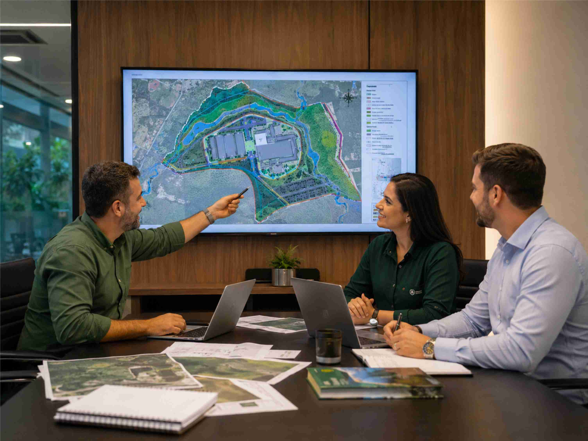
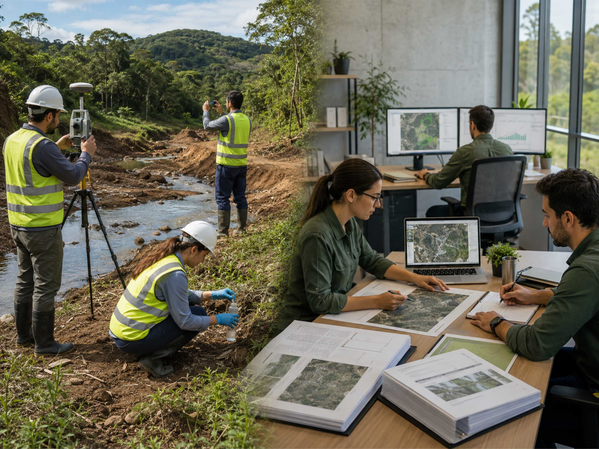

Licenciamento Ambiental
Elaboração de estudos ambientais, protocolização e acompanhamento técnico-administrativo
Nós vamos até o órgão ambiental!
Em processos de licenciamento ambiental, regularização, pareceres técnicos e atendimento de exigências, a qualidade do documento não depende apenas da elaboração do estudo. Também é fundamental compreender o entendimento do órgão ambiental competente, os critérios adotados pelos analistas e as expectativas técnicas aplicáveis ao caso concreto.
Por isso, quando necessário, atuamos em representação técnica do cliente junto à secretaria ambiental, autarquia, conselho, setor de licenciamento ou outro órgão competente, buscando alinhar previamente a estratégia técnica mais adequada para o processo.
Esse alinhamento permite esclarecer dúvidas, antecipar exigências, ajustar a abordagem metodológica e construir estudos, relatórios ou pareceres mais aderentes ao entendimento técnico do órgão avaliador.

Elaboramos os estudos ambientais necessários
Após o enquadramento do empreendimento e o alinhamento técnico com o órgão competente, elaboramos os estudos ambientais necessários para instruir o processo de licenciamento, regularização, renovação de licença ou atendimento de exigências.
Entre os documentos que podem ser necessários, estão relatórios ambientais, estudos de viabilidade, memoriais técnicos, diagnósticos ambientais, planos de controle, PRAD, PGRCC, estudos hidrológicos, estudos de disponibilidade hídrica e capacidade de autodepuração, mapas temáticos, pareceres técnicos e respostas a notificações ou pendências.
Nosso objetivo é construir uma documentação tecnicamente coerente, rastreável e defensável, reduzindo o risco de retrabalho, exigências complementares e atrasos na tramitação do processo ambiental.

Por que isso é importante?
Na prática, o processo de licenciamento busca compatibilizar o desenvolvimento de atividades econômicas com a proteção do meio ambiente , indicando condicionantes, medidas de controle, estudos técnicos, programas ambientais e obrigações que devem ser observadas pelo empreendedor.
Para alcançar esse objetivo, nossa consultoria e assessoria técnica em licenciamento ambiental envolve:
Segurança técnica e jurídica
Nosso objetivo é reduzir o risco de pendências, retrabalho e atrasos na análise do processo, entregando documentos tecnicamente consistentes, bem fundamentados e compatíveis com as normas ambientais aplicáveis.
Essa atuação contribui para trazer segurança técnica e jurídica para todas as partes: para o empreendedor, que passa a ter maior previsibilidade no processo; para o órgão ambiental, que recebe documentação mais clara e objetiva; e para os responsáveis técnicos, que passam a trabalhar com premissas melhor definidas.
Na prática, buscamos construir um processo mais objetivo, com menor risco de exigências posteriores e maior probabilidade de aprovação sem pendências de ordem técnica.
Deixe-nos resolver o seu Licenciamento Ambiental!
Envie as informações do seu processo.
Solicitar orçamento